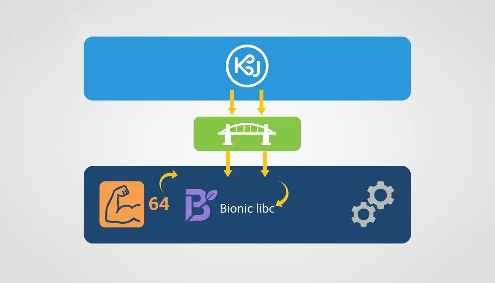
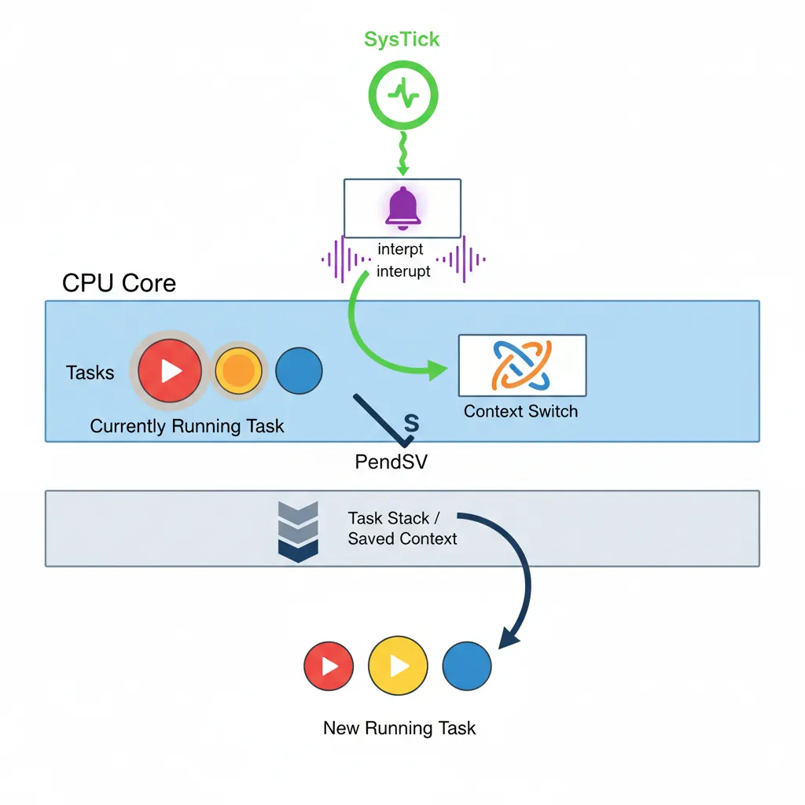
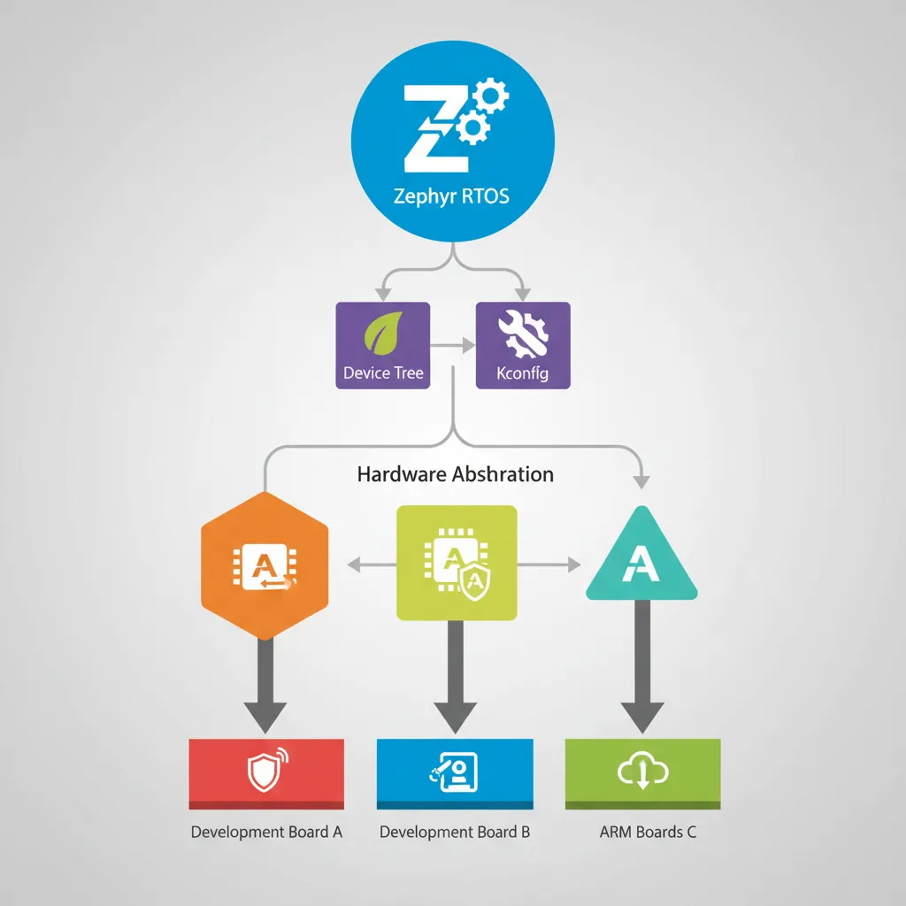
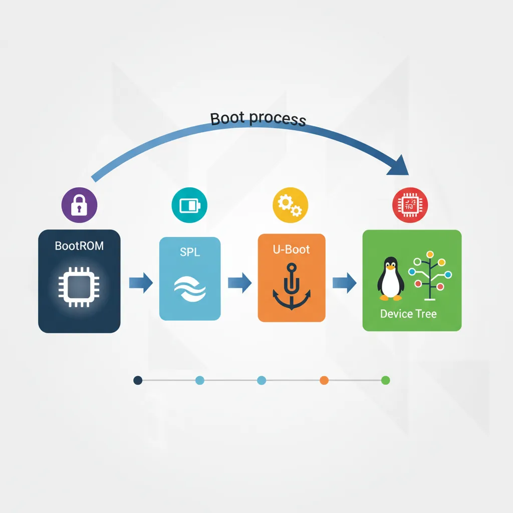
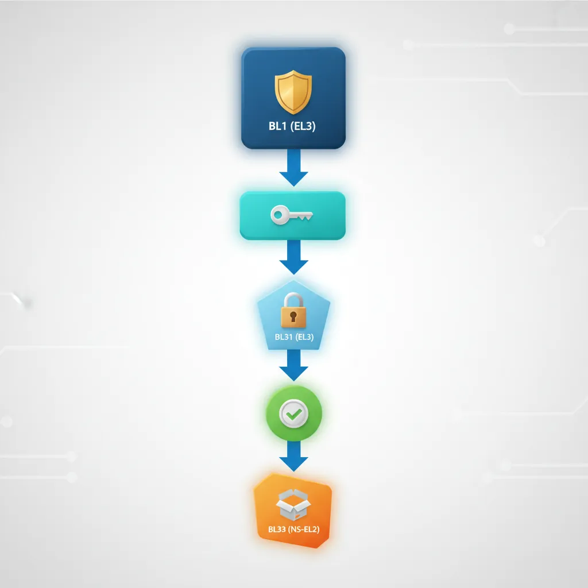

Theory is validated in production. This part walks through five real deployment environments where ARM assembly knowledge is directly exercised: Android native code via the NDK, two embedded RTOSes (FreeRTOS and Zephyr), the U-Boot bootloader that brings up hundreds of millions of Linux boards, and Trusted Firmware-A — the ARM-blessed reference implementation of the secure world boot chain.
Android NDK & ARM ABI
ARM ABI Variants in the NDK
Android supports two ARM ABIs: armeabi-v7a (Thumb-2, VFP-D16, soft-float ABI) and arm64-v8a (AArch64, mandatory on 64-bit devices since Android 5.0). Since the 2019 Play Store requirement that all new apps support 64-bit, arm64-v8a has been the primary target.

armeabi-v7a vs arm64-v8a
| Property | armeabi-v7a | arm64-v8a |
|---|---|---|
| ISA | ARM32 / Thumb-2 | AArch64 |
| GPRs | r0–r15 | x0–x30, sp, pc |
| Arg registers | r0–r3 (4 × 32-bit) | x0–x7 (8 × 64-bit) |
| FP/SIMD | VFP-D16 or NEON | v0–v31 (128-bit) |
| Stack alignment | 8 bytes | 16 bytes |
| Pointer size | 32 bits | 64 bits |
| Syscall | SVC #0 (r7=NR) | SVC #0 (x8=NR) |
JNI Integration — Calling Native Code from Java
The Java Native Interface (JNI) is the bridge between Dalvik/ART bytecode and ARM native code. Native functions must follow a strict naming convention and the ABI calling convention.
// C/C++ JNI function — compiles to arm64-v8a native library
// File: jni/native-lib.cpp
#include <jni.h>
#include <string.h>
#include <arm_neon.h>
// JNI name: Java_com_example_myapp_MainActivity_dotProduct
// x0 = JNIEnv*, x1 = jobject thiz, x2 = jfloatArray a, x3 = jfloatArray b
extern "C" JNIEXPORT jfloat JNICALL
Java_com_example_myapp_MainActivity_dotProduct(
JNIEnv *env, jobject /* thiz */,
jfloatArray a, jfloatArray b)
{
jsize len = env->GetArrayLength(a);
float *pa = env->GetFloatArrayElements(a, nullptr);
float *pb = env->GetFloatArrayElements(b, nullptr);
float32x4_t vsum = vdupq_n_f32(0.0f);
jsize i = 0;
for (; i + 3 < len; i += 4) {
float32x4_t va = vld1q_f32(pa + i);
float32x4_t vb = vld1q_f32(pb + i);
vsum = vmlaq_f32(vsum, va, vb); // vsum += va * vb (fused multiply-add)
}
// Horizontal add of vsum lanes
float sum = vaddvq_f32(vsum);
for (; i < len; i++) sum += pa[i] * pb[i]; // tail
env->ReleaseFloatArrayElements(a, pa, JNI_ABORT);
env->ReleaseFloatArrayElements(b, pb, JNI_ABORT);
return sum;
}# CMakeLists.txt for Android NDK
cmake_minimum_required(VERSION 3.22)
project(myapp)
add_library(native-lib SHARED jni/native-lib.cpp)
# AArch64 NEON is always available — no -mfpu flag needed
target_compile_options(native-lib PRIVATE
-O3
-march=armv8-a+simd # enable explicit SVE/NEON intrinsics
-ffast-math
)
find_library(log-lib log)
target_link_libraries(native-lib ${log-lib})# Build with NDK CMake wrapper
# In app/build.gradle:
# externalNativeBuild { cmake { path "CMakeLists.txt" } }
# defaultConfig { externalNativeBuild { cmake { abiFilters "arm64-v8a" } } }
# Direct command-line build (NDK r25+)
$NDK/toolchains/llvm/prebuilt/darwin-x86_64/bin/clang++ \
--target=aarch64-linux-android33 \
--sysroot=$NDK/toolchains/llvm/prebuilt/darwin-x86_64/sysroot \
-O3 -march=armv8-a+simd -ffast-math \
-shared -fPIC \
jni/native-lib.cpp -o libnative-lib.soBionic libc — Key Differences from glibc
Android's Bionic C library is smaller and faster than glibc but has important differences that surface in native ARM code:
Bionic vs glibc differences that affect assembly
- No
pthread_cancel— asynchronous cancellation points absent; code relying on cancel-safe wrappers must be reworked. - No
getcontext/swapcontext— coroutine libraries must use rawsetjmp/longjmpor hand-written context switch. - Stack size — main thread 8 MB by default; spawned threads 1 MB. Deeply recursive assembly-heavy code must call
pthread_attr_setstacksize. - System call numbers — Bionic uses the kernel ABI directly (
x8= syscall number,SVC #0). Numbers matcharch/arm64/include/asm/unistd.hin the kernel tree. - TLS access — thread-local storage slot 0 (
TPIDR_EL0) points to Bionicpthread_internal_t; slot 1 is errno.
// Accessing errno on Android/Bionic — assembly equivalent
// In C: errno is at __get_tls()[1]
// In ARM64 ASM:
// mrs x0, tpidr_el0 // load TLS base
// ldr x0, [x0, #8] // slot 1 = errno pointer
// ldr w0, [x0] // load errno value
// Minimal raw syscall (no Bionic wrapper)
// __NR_write = 64 (arm64 kernel)
static inline long raw_write(int fd, const void *buf, size_t count)
{
register long x0 __asm__("x0") = fd;
register long x1 __asm__("x1") = (long)buf;
register long x2 __asm__("x2") = count;
register long x8 __asm__("x8") = 64; // __NR_write
__asm__ volatile ("svc #0"
: "+r"(x0) : "r"(x1), "r"(x2), "r"(x8)
: "memory", "cc");
return x0;
}FreeRTOS on Cortex-M
FreeRTOS is the dominant RTOS for Cortex-M microcontrollers. Its scheduler relies on SysTick for periodic preemption and on PendSV for deferred context switching — both implemented in ARM assembly.

Task Creation & Scheduler API
// FreeRTOS task API — Cortex-M4 (STM32F4 example)
#include "FreeRTOS.h"
#include "task.h"
#include "queue.h"
// configTICK_RATE_HZ = 1000 (1 ms tick via SysTick)
// configMAX_SYSCALL_INTERRUPT_PRIORITY = 0x50 (5 NVIC priority levels reserved)
static QueueHandle_t xDataQueue;
// Producer task — highest priority
void vProducerTask(void *pvParams)
{
(void)pvParams;
uint32_t count = 0;
for (;;) {
count++;
xQueueSend(xDataQueue, &count, portMAX_DELAY);
vTaskDelay(pdMS_TO_TICKS(10)); // yield for 10 ms
}
}
// Consumer task — lower priority
void vConsumerTask(void *pvParams)
{
(void)pvParams;
uint32_t received;
for (;;) {
if (xQueueReceive(xDataQueue, &received, portMAX_DELAY) == pdTRUE) {
// process received
}
}
}
int main(void)
{
xDataQueue = xQueueCreate(16, sizeof(uint32_t));
xTaskCreate(vProducerTask, "PROD", 256, NULL, 3, NULL);
xTaskCreate(vConsumerTask, "CONS", 256, NULL, 2, NULL);
vTaskStartScheduler(); // never returns if heap is sufficient
for (;;) {}
}Context Switch Assembly — PendSV Handler
The FreeRTOS PendSV handler is pure ARM assembly. On Cortex-M4 the hardware stacks {r0–r3, r12, lr, pc, xPSR} automatically on exception entry; the RTOS handler saves the remaining callee-saved registers {r4–r11} and the floating-point context.
; FreeRTOS PendSV_Handler — Cortex-M4 + FPU (ARM syntax, GCC/Keil)
; extern void *pxCurrentTCB; // pointer to current TCB (thread control block)
.syntax unified
.thumb
.global PendSV_Handler
.type PendSV_Handler, %function
PendSV_Handler:
; --- Save current task context ---
mrs r0, psp ; r0 = process stack pointer
isb ; instruction sync barrier
ldr r3, =pxCurrentTCB ; r3 = &pxCurrentTCB
ldr r2, [r3] ; r2 = pxCurrentTCB (TCB pointer)
; Check if FPU context is active (CONTROL.FPCA bit)
tst lr, #0x10 ; EXC_RETURN: bit4=0 → FPU used
it eq
vstmdbeq r0!, {s16-s31} ; save S16-S31 (S0-S15 already on HW stack)
stmdb r0!, {r4-r11, lr} ; save r4-r11 and EXC_RETURN
str r0, [r2] ; store new PSP into TCB->pxTopOfStack
; --- Select next task ---
stmdb sp!, {r3} ; preserve r3 across C call
mov r0, #configMAX_SYSCALL_INTERRUPT_PRIORITY
msr basepri, r0 ; disable interrupts ≤ config priority
dsb
isb
bl vTaskSwitchContext ; updates pxCurrentTCB
mov r0, #0
msr basepri, r0 ; re-enable all interrupts
ldmia sp!, {r3} ; restore r3
; --- Restore next task context ---
ldr r1, [r3] ; r1 = new pxCurrentTCB
ldr r0, [r1] ; r0 = new task's pxTopOfStack
ldmia r0!, {r4-r11, lr} ; restore r4-r11 and EXC_RETURN
tst lr, #0x10 ; check FPU again
it eq
vldmiaeq r0!, {s16-s31} ; restore S16-S31 if FPU context present
msr psp, r0 ; restore PSP
isb
bx lr ; return from exception (hardware restores r0-r3,r12,lr,pc,xPSR)
.size PendSV_Handler, .-PendSV_HandlerSysTick ISR & Tick Hook
// FreeRTOS SysTick handler (in port.c — simplified excerpt)
// Cortex-M: SysTick fires every 1/configTICK_RATE_HZ seconds.
// The handler increments the tick count and optionally pends PendSV.
void xPortSysTickHandler(void)
{
// The SysTick runs at max syscall priority —
// lock the scheduler before touching kernel structures.
portDISABLE_INTERRUPTS();
{
// Increment tick; returns pdTRUE if a context switch is needed
if (xTaskIncrementTick() != pdFALSE) {
// Trigger PendSV to do the actual switch after all ISRs finish
portNVIC_INT_CTRL_REG = portNVIC_PENDSVSET_BIT;
}
}
portENABLE_INTERRUPTS();
}
// Low-power idle hook — entered when no tasks are ready
void vApplicationIdleHook(void)
{
// WFI suspends the core until the next interrupt (SysTick, peripheral, etc.)
__asm volatile ("wfi");
}Zephyr RTOS on ARM
Zephyr is a Linux Foundation RTOS targeting everything from Cortex-M0 to Cortex-A53. Its hardware abstraction is driven by Device Tree (DTS) and Kconfig, making the same application code portable across hundreds of boards.

Device Tree, Kconfig & West Build
# Build a Zephyr blinky application for nRF52840-DK (Cortex-M4F)
west build -b nrf52840dk/nrf52840 samples/basic/blinky
# Build for STM32 Nucleo-F401RE
west build -b nucleo_f401re samples/basic/blinky
# Build for QEMU ARM Cortex-M3 emulator
west build -b qemu_cortex_m3 samples/hello_world
west build -t run # run in QEMU
# Flash to real hardware via OpenOCD
west flash --runner openocd
# Flash via J-Link
west flash --runner jlink// Zephyr application — GPIO blink with ARM-aware timing
#include <zephyr/kernel.h>
#include <zephyr/drivers/gpio.h>
// DTS alias: led0 → &gpio0 pin 13 (board-specific)
#define LED0_NODE DT_ALIAS(led0)
static const struct gpio_dt_spec led = GPIO_DT_SPEC_GET(LED0_NODE, gpios);
int main(void)
{
gpio_pin_configure_dt(&led, GPIO_OUTPUT_ACTIVE);
while (1) {
gpio_pin_toggle_dt(&led);
k_msleep(500); // uses SysTick via Zephyr kernel timer
}
return 0;
}# prj.conf — Kconfig options for stack size and FPU
CONFIG_MAIN_STACK_SIZE=2048
CONFIG_FPU=y # enable hardware FPU context save/restore
CONFIG_FPU_SHARING=y # multiple threads may use FPU
# Override thread stack analysis
CONFIG_THREAD_STACK_INFO=y
CONFIG_THREAD_ANALYZER=yarch/arm/core/aarch32/swap_helper.S. On Cortex-M33 (ARMv8-M) it leverages the security extension stack banked registers when TrustZone is enabled.
U-Boot Bootloader
U-Boot is the dominant open-source bootloader for Linux on ARM. It runs before the kernel — initialising DRAM, configuring clocks, and loading the kernel image plus Device Tree blob (DTB) into memory.

Boot Flow & SPL
Typical 4-stage ARM Linux boot
- ROM bootloader (BootROM) — on-chip, vendor ROM. Loads SPL from eMMC/SD boot partition into on-chip SRAM (typically 64–256 KB).
- SPL (Secondary Program Loader) — tiny first-stage U-Boot. Initialises DRAM controller, then loads full U-Boot into DRAM.
- U-Boot proper — full bootloader. Initialises peripherals, parses
boot_targets, loads kernel + DTB + initrd. - Linux kernel — entered via
booticommand (Image format, AArch64) orbootz(zImage, ARM32).
# U-Boot SPL entry — arch/arm/cpu/armv8/start.S (simplified)
# The BootROM jumps here with:
# x0 = pointer to ATF/BL31 info (platform specific)
# x1 = machine ID or 0
# All other cores spinning at wfe loop
.global _start
.type _start, @function
_start:
/* Switch to AArch64 EL3 if BootROM left us there */
mrs x0, CurrentEL
lsr x0, x0, #2
cmp x0, #3
b.eq el3_entry
el1_entry:
/* Already at EL1 (some platforms drop to EL1 directly) */
adr x0, _start
ldr x1, =CONFIG_SYS_TEXT_BASE
/* relocate if load address != link address ... */
b board_init_f_init_reserve
el3_entry:
/* Configure SCTLR_EL3: disable MMU/cache, set endianness */
mov x0, #0
msr sctlr_el3, x0
isb
/* Set up EL3 stack */
ldr x0, =CONFIG_SYS_INIT_SP_ADDR
bic sp, x0, #0xf /* 16-byte align */
bl board_init_f /* C entry point */Relocation & FDT Manipulation
U-Boot relocates itself to the top of available DRAM to leave low memory for the kernel. After relocation, it patches the Device Tree blob with runtime information (serial number, MAC addresses, memory map).
// U-Boot board init sequence (board/myboard/myboard.c)
#include <common.h>
#include <fdt_support.h>
// Called after DRAM init — set up board-level structures
int board_init(void)
{
// Example: configure a GPIO for board ID detection
// (platform-specific, shown schematically)
return 0;
}
// Called just before booting the kernel: patch DTB with runtime info
int ft_board_setup(void *blob, struct bd_info *bd)
{
// Patch /memory node with actual DRAM size detected at runtime
u64 base = CONFIG_SYS_SDRAM_BASE;
u64 size = (u64)gd->ram_size;
fdt_fixup_memory(blob, base, size);
// Add Ethernet MAC address read from OTP efuses
u8 mac[6];
read_mac_from_efuse(mac);
do_fixup_by_path(blob, "/ethernet@ff200000", "mac-address",
mac, sizeof(mac), 1);
return 0;
}Distro Boot — Generic Boot Script
# U-Boot environment for distro boot (Raspberry Pi 4 example)
# This lives in /boot/extlinux/extlinux.conf on the SD card
LABEL Linux
KERNEL /Image # AArch64 uncompressed kernel
FDT /dtbs/broadcom/bcm2711-rpi-4-b.dtb
APPEND root=/dev/mmcblk0p2 rootwait console=ttyS0,115200
# U-Boot command that triggers the above:
# => run distro_bootcmd
# Internally executes:
# load mmc 0:1 ${loadaddr} /Image
# load mmc 0:1 ${fdt_addr} /dtbs/broadcom/bcm2711-rpi-4-b.dtb
# booti ${loadaddr} - ${fdt_addr}
# Manual kernel boot from U-Boot prompt
=> setenv bootargs "root=/dev/mmcblk0p2 rootwait console=ttyS0,115200"
=> load mmc 0:1 0x40480000 /Image
=> load mmc 0:1 0x44000000 /dtbs/broadcom/bcm2711-rpi-4-b.dtb
=> booti 0x40480000 - 0x44000000Trusted Firmware-A (TF-A)
TF-A is ARM's reference implementation of the secure-world firmware. It executes at EL3 and is responsible for the BL1→BL2→BL31/BL32/BL33 boot chain and runtime PSCI services used to power-manage cores from the OS.

BL1–BL33 Boot Chain
Five boot loader stages
| Stage | EL | Location | Responsibility |
|---|---|---|---|
| BL1 | EL3 | Trusted ROM | AP cold boot, authentication, loads BL2 |
| BL2 | EL1-S | Trusted SRAM | Platform init, loads BL31 + BL32 + BL33 |
| BL31 | EL3 (resident) | Trusted SRAM | Secure monitor: SMC dispatcher, PSCI, GIC setup |
| BL32 | S-EL1 | Trusted DRAM | Trusted OS (OP-TEE) — optional |
| BL33 | EL2 or EL1-NS | DRAM | Normal world bootloader (U-Boot or UEFI) |
; TF-A BL1 cold boot entry (bl1/aarch64/bl1_entrypoint.S — simplified)
.globl bl1_entrypoint
bl1_entrypoint:
; Verify we are at EL3
mrs x0, CurrentEL
lsr x0, x0, #2
cmp x0, #MODE_EL3
b.ne do_panic
; Reset SCTLR_EL3 — disable MMU, disable caches, set little-endian
mov_imm x0, (SCTLR_EL3_RES1) // required-1 bits
msr sctlr_el3, x0
isb
; Configure SCR_EL3 — set NS=0 for secure world initially
mov_imm x0, (SCR_RESET_VAL)
msr scr_el3, x0
isb
; Set up EL3 stack pointer
adr x0, __BL1_RAM_START__
add x0, x0, #BL1_STACKS_OFFSET
mov sp, x0
; Zero-initialise BSS
adr x0, __BSS_START__
adr x1, __BSS_END__
bl1_bss_loop:
str xzr, [x0], #8
cmp x0, x1
b.lo bl1_bss_loop
; Jump to C entry
bl bl1_setup ; platform_setup(), console_init()
bl bl1_main ; loads BL2, validates hash chain
; bl1_main never returns — it jumps to BL31 via ERETPSCI SMC Handler
Power State Coordination Interface (PSCI) is the standard ARM interface for OS-initiated core power management. Linux calls SVC (in EL1) or HVC (in EL2) which traps to EL3 where BL31 handles it.
// TF-A PSCI handler (lib/psci/psci_common.c — conceptual excerpt)
// SMC function IDs (PSCI 1.1, 64-bit convention)
#define PSCI_CPU_OFF 0xC4000002
#define PSCI_CPU_ON_AARCH64 0xC4000003
#define PSCI_SYSTEM_SUSPEND 0xC400000E
#define PSCI_SYSTEM_RESET 0x84000009
// Called from SMC dispatcher after verifying caller EL is ≥ EL1
int psci_handler(uint32_t smc_fid,
u_register_t x1, u_register_t x2, u_register_t x3)
{
switch (smc_fid) {
case PSCI_CPU_ON_AARCH64:
// x1 = target_cpu (MPIDR), x2 = entry_point_address, x3 = context_id
return psci_cpu_on((u_register_t)x1,
(uintptr_t)x2, (u_register_t)x3);
case PSCI_CPU_OFF:
// Powers off calling CPU; does not return to caller
psci_cpu_off();
panic(); // unreachable
case PSCI_SYSTEM_SUSPEND:
// x1 = entry_point address; powers off cluster if all CPUs off
return psci_system_suspend((uintptr_t)x1, x2);
case PSCI_SYSTEM_RESET:
psci_system_reset();
panic(); // unreachable
default:
return PSCI_E_NOT_SUPPORTED;
}
}; BL31 SMC entry vector (Secure Monitor Call handler)
; When Linux calls SVC from EL1, EL3 receives control here.
; x0 = SMC function identifier (SMCCC standard)
; x1–x6 = arguments
.globl smc_handler64
smc_handler64:
; Save general-purpose registers (caller ABI args preserved in x0-x6)
stp x0, x1, [sp, #-16]!
stp x2, x3, [sp, #-16]!
stp x4, x5, [sp, #-16]!
stp x6, x7, [sp, #-16]!
stp x8, x9, [sp, #-16]!
stp x18, x30, [sp, #-16]!
; Decode SMC function ID and dispatch
mov w19, w0 ; save fid
bl smc_dispatch ; C function returns result in x0
; Restore non-volatile state, return result in x0
ldp x18, x30, [sp], #16
ldp x8, x9, [sp], #16
; Restore callee-saved but NOT x0 (holds return value from smc_dispatch)
add sp, sp, #(6*8) ; skip x1-x6 (caller discards them)
eret ; return to EL1 NS worldCase Study: ARM in Production at Scale
Raspberry Pi: The Full ARM Stack in 145 Million Units
The Raspberry Pi is the most tangible example of every system covered in this article working together in a single product. Since 2012, over 145 million units have shipped, evolving from ARMv6 (ARM1176JZF-S) to ARMv8-A (Cortex-A76 in Pi 5).
Boot chain: The Pi 4/5 uses a VideoCore GPU BootROM → start4.elf (GPU firmware, analogous to BL1/BL2) → U-Boot or the Linux kernel directly. TF-A (BL31) runs at EL3 providing PSCI services for CPU hotplug. The Device Tree Blob (bcm2711-rpi-4-b.dtb) is loaded by U-Boot and passed to the kernel — exactly as shown in the distro boot section above.
RTOS usage: Industrial variants like the Raspberry Pi Pico (RP2040, dual Cortex-M0+) run FreeRTOS for real-time control — robotic arms, CNC machines, 3D printers. The Zephyr RTOS also supports the RP2040 via west build -b rpi_pico.
Android: Android runs on the Pi 4 via community builds (KonstaKANG), demonstrating the full NDK / JNI / Bionic stack on a $35 board. The same ABI constraints (arm64-v8a, 16-byte stack alignment, NEON always-on) apply whether you're on a Pixel phone or a Pi.
ARM Software Ecosystem: From Proprietary to Open Source (1990–2024)
1990s — Closed World: ARM development meant purchasing ARM's own SDT (Software Development Toolkit) or Keil's tools. No open-source RTOS existed for ARM. Boot code was vendor-proprietary, shipped as binary blobs. Cross-compilation from x86 required expensive Metrowerks CodeWarrior licenses.
2000s — Open Source Rising: U-Boot (derived from PPCBoot, 2000) became the standard ARM bootloader. FreeRTOS launched in 2003, offering a free RTOS alternative to VxWorks ($30K+ licenses). GCC's ARM support matured, making free cross-compilation practical. Android's launch (2008) brought ARM to mainstream consumer devices — the NDK (r1, June 2009) gave developers direct access to ARM native code.
2010s — Standardisation Era: ARM published PSCI (2013), standardising how OSes manage core power across all vendors. Linaro (founded 2010) unified ARM Linux kernel support. TF-A (originally ARM Trusted Firmware, 2014) became the reference EL3 implementation. Zephyr RTOS (2016) brought Linux Foundation governance to embedded. Android required 64-bit (arm64-v8a) support by 2019.
2020s — Convergence: The same TF-A/U-Boot/Linux stack runs on Raspberry Pi, AWS Graviton servers, and automotive ECUs. FreeRTOS was acquired by Amazon (2017) and integrated with AWS IoT. Zephyr surpassed FreeRTOS in supported board count (500+). ARM's SystemReady certification program ensured standards-based boot across all Cortex-A platforms.
Hands-On Exercises
Build & Run a Zephyr Application in QEMU
Install the Zephyr SDK and build the hello_world sample for the QEMU Cortex-M3 target. Then modify it to print the SysTick reload value and the number of context switches after 5 seconds of running two threads.
# Install Zephyr (follow https://docs.zephyrproject.org/latest/develop/getting_started/)
pip install west
west init ~/zephyrproject
cd ~/zephyrproject && west update
# Build hello_world for QEMU Cortex-M3
west build -b qemu_cortex_m3 samples/hello_world
west build -t run
# Expected output:
# *** Booting Zephyr OS build v3.x.0 ***
# Hello World! qemu_cortex_m3
# Now build the philosophers sample (multi-threaded):
west build -b qemu_cortex_m3 samples/philosophers -p
west build -t run
# Observe thread scheduling with CONFIG_THREAD_ANALYZER=y in prj.confExpected Learning: Zephyr's west tool abstracts cross-compilation entirely. The same application code runs on QEMU and real hardware with only a board change (-b flag).
Trace FreeRTOS Context Switches on STM32
Using STM32CubeIDE or QEMU with the STM32F4 machine, create a FreeRTOS project with 3 tasks at different priorities. Add instrumentation to the PendSV handler to toggle a GPIO pin on every context switch, then measure the switch frequency and latency.
// Add to your FreeRTOS project — context switch counter
#include "FreeRTOS.h"
#include "task.h"
volatile uint32_t context_switch_count = 0;
// Hook called by FreeRTOS on every task switch
void traceTASK_SWITCHED_IN(void)
{
context_switch_count++;
// Toggle PA5 (LED on Nucleo-F401RE) to visualise on oscilloscope
GPIOA->ODR ^= (1 << 5);
}
// Three tasks at different priorities
void vHighTask(void *p) { for(;;) { vTaskDelay(1); } }
void vMedTask(void *p) { for(;;) { vTaskDelay(5); } }
void vLowTask(void *p) {
for(;;) {
vTaskDelay(pdMS_TO_TICKS(1000));
printf("Switches/sec: %lu\n", context_switch_count);
context_switch_count = 0;
}
}
int main(void)
{
HAL_Init();
SystemClock_Config();
xTaskCreate(vHighTask, "H", 128, NULL, 3, NULL);
xTaskCreate(vMedTask, "M", 128, NULL, 2, NULL);
xTaskCreate(vLowTask, "L", 256, NULL, 1, NULL);
vTaskStartScheduler();
}Expected Learning: Context switch frequency depends on task delay values and priorities. On a Cortex-M4 at 168 MHz, PendSV handler completes in ~1-2 microseconds including FPU context save.
Boot U-Boot + Linux on QEMU virt Machine
Build U-Boot from source for the QEMU AArch64 virt machine, create a minimal initramfs, and boot a complete Linux system. Observe the full boot chain: U-Boot SPL → U-Boot proper → Linux kernel → userspace.
# 1. Build U-Boot for QEMU ARM64 virt
git clone https://source.denx.de/u-boot/u-boot.git
cd u-boot
make qemu_arm64_defconfig
make CROSS_COMPILE=aarch64-linux-gnu- -j$(nproc)
# Output: u-boot.bin (BL33 image for QEMU)
# 2. Download a prebuilt AArch64 Linux kernel (or build from source)
wget https://cdn.kernel.org/pub/linux/kernel/v6.x/linux-6.6.tar.xz
# ... configure with: make ARCH=arm64 defconfig && make ARCH=arm64 Image
# 3. Create minimal initramfs
mkdir -p initramfs/{bin,dev,proc,sys}
cat > initramfs/init <<'INIT'
#!/bin/sh
mount -t proc none /proc
mount -t sysfs none /sys
echo "=== ARM64 Linux booted via U-Boot ==="
echo "Kernel: $(uname -r)"
echo "CPU: $(cat /proc/cpuinfo | grep 'model name' | head -1)"
exec /bin/sh
INIT
chmod +x initramfs/init
# ... (statically link busybox into initramfs/bin/sh)
# 4. Boot with QEMU
qemu-system-aarch64 \
-machine virt -cpu cortex-a57 -m 512M \
-bios u-boot.bin \
-device loader,file=Image,addr=0x40400000 \
-device loader,file=initramfs.cpio.gz,addr=0x44000000 \
-serial stdio -display none -no-rebootExpected Learning: U-Boot initialises the virt machine's DRAM and GICv2, then booti transfers control to the kernel at EL1. The full chain demonstrates every concept from Parts 15 (boot), 20 (bare-metal), and 24 (linkers/ELF).
Summary
Five production environments — each exercising a distinct layer of ARM system knowledge:
Key takeaways by environment
- Android NDK: arm64-v8a ABI enforces 16-byte stack alignment, 8 argument registers, and NEON always available. Bionic differs from glibc in TLS layout and absent POSIX features.
- FreeRTOS: PendSV handler is the core context switch engine. Hardware auto-saves r0–r3/r12/lr/pc/xPSR; the RTOS saves r4–r11 and optional FPU S16–S31.
- Zephyr: Device Tree + Kconfig abstracts hardware; the ARM port still drops to assembly for context switch and exception setup.
- U-Boot: SPL bootstraps DRAM from BootROM, U-Boot proper handles FDT patching and distro boot. AArch64 entry code at
_startmirrors bare-metal kernel entry. - TF-A: BL31 is the permanent EL3 resident. PSCI SMC handler dispatches core power calls from Linux to firmware with full register save/restore discipline.